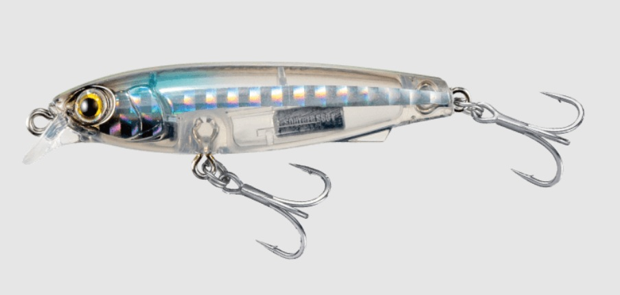

サウザー S60(Souther S60)
サウザー S60(Souther S60)はMaria（マリア）のシンキングペンシルです。
「ジャークで誘い、フォールで喰わす」をコンセプトとしたジャーキング特化型シンキングペンシル。タダ巻きではナチュラルなテールスイング、ジャークではミノーライクなスライド&ヒラ打ちに切り替わる2WAYアクションが最大の武器です。2026年4月上旬発売の注目作。

スペック
- メーカー
- Maria（マリア）/ ヤマリア
- 長さ
- 60 mm
- 重さ
- 9 g
- フック
- #8×2(トリプル太軸)
- リング
- #2
- レンジ
- 表層〜ボトム（フォールスピード約3秒/m）
- タイプ
- シンキングペンシル
- 沈下タイプ
- シンキング
- アクション
- 2WAY（テールスイング／スライド&ヒラ打ち）
- ターゲット
- 青物
- 価格
- 2024円(税込)
- 発売日
- 2026-04-10
▼今すぐチェック

サウザーS60の特徴
タダ巻きの食わせとジャークのリアクションを使い分けるジャーキング特化型シンペン
-
2WAYアクションで状況を打破
タダ巻きではナチュラルにふらつくテールスイングアクションで食わせを演出。
そこにジャークやトゥイッチを加えると、ミノーライクな左右スライド＆ヒラ打ちアクションに即座に切り替わりターゲットの捕食スイッチを入れる。
1本で2種類のアプローチが可能なため、状況変化への対応力が高い。 -
水平姿勢フラッシングフォールで喰わせる
ジャーク後は素早く水平姿勢に戻り、フラッシングしながらフォール（約3秒/m）。
リアクションで追わせてフォールで喰わせるという一連の流れがワンキャストで完結する。
浮上軌道でアクションするためボトムギリギリからの再浮上も可能で、根を交わしながらのタイトなアプローチができる。 -
ライトタックル対応の扱いやすいサイズ感
PE0.6〜1.0号クラスのライトタックルに対応したコンパクトサイズ。
大型のシンペンが使いにくい小場所や港湾エリア、タフな状況でも扱いやすく、マイクロベイトパターンにも対応できるシルエットが強み。
サウザーS60の使い方
基本の使い方はキャスト後にフォールでレンジを入れ、ジャーク→フォール→ジャークのリズムで探る。
ジャーク幅は大きくする必要はなく、ショートジャークやトゥイッチを繰り返すだけでスライド&ヒラ打ちが発動する。タダ巻きだけでも釣れるため、まずはただ巻きで魚の反応を確認してからロッドアクションを加えていくのが効率的。
サウザーS60の得意な状況
港湾・河川・河口など幅広いフィールドに対応。
特にシーバスがタダ巻きに反応しない低活性時や、プレッシャーの高い激戦区でジャーキングによるリアクションバイトが有効。
60mmというサイズはハク・シラス・マイクロベイトパターンでもシルエットが合わせやすく、春〜夏の小型ベイトシーズンに特に活躍する。
釣れるワンポイント
ジャーク後のフォール中に最もバイトが集中しやすい。フォール中にラインが走ったり、テンションが抜けたりしたらすかさずフッキングを入れよう。
タダ巻きで反応がなければジャーク幅を少し大きくしてスライド幅を増やすか、フォールを長めに取るとバイトを引き出せることが多い。
人気カラー
 アカキン
アカキン
リーフフィッシングで圧倒的実績のゴールドメッキカラー。フィッシュイーターへの強烈なアピール力。
 フルクリア
フルクリア
シラス等の透明なベイトパターンを再現。余計な色を一切排除した究極の食わせカラー。
 フリッカーグロー
フリッカーグロー
マズメ時や光量変化時に威力を発揮するクリア×グロー。ローライト×マイクロベイトに強い。
 ハク
ハク
ボラの稚魚ハクをリアルに再現した高フラッシングカラー。春のハクパターンで一択。
画像出典:Maria公式HP